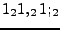

Any number written as a subscript denotes a Karvai for that duration. It
has the same meaning as using parentheses, but is recommended to make it
quicker to write. For example,  denotes ``Tha (Thin,)
Tha, (Thin,) Tha; (Thin,)''.
Suriya Subramanian
2007-01-11